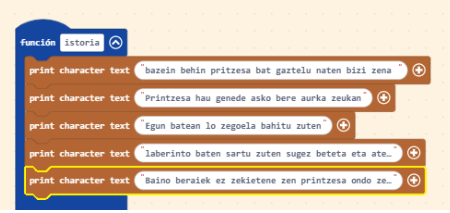

| Istorioa |  |
Hateko hemen istorioa utziko dut helburuan kontatu detena aipatzen jokalariak hazi beino lehenago istorioa ikusteko |
| 1 | |
Parte honetan fontoa aukeratu dut (fondo hau da jolasaren historia azaltzerakoan agertukodena) eta partida hasterakoan entzungo den abestia.Gero maparen diseinua dago eta pertsonaia sortzerakoan (printzesa) maparen ze tokitan egon behar du jolasaren hasieran zehaztu dut.Gero txamponak diseinatu ditut kasu honetan sagarrak direla el 50 egongo dira. Honekin bukatzeko etsaiak sortu ditut kasu honetan 5 suge direla, beraien posizioa eta abiadura sehaztu ditut. |
| 2 | |
Hemen suge bati bizitza marra jarri diot kokapena eta abiadura zehaztu hondoren, perlaa jarri dut bizitza-iturri gisa bizitza gehiago lortzeko. Hasieran eukiko dudan puntagea 0 izango dela eta 3 bizitza aukiko ditudala zehaztu dut.Jolaresen kordenadak zehaztu ditut. |
| 3 | |
Txanpon bat lortzerakoan ze abesti entzungo dan eta pintu bat irabaziko dudala jarri dut, gero sugea printzesara ailegatzen bada ze abesti entzungo dan eta punto 1 galduko dudala jarri dut. Printzesaren kokapena zehaztu dut eta bizitza gabe gelditzen bada partida bukatuko dela eta galduko dudala jarri dut. |
| 4 | |
Printzesa perlara ailegatzen bada bizitza gehiago lortuko ditut, pertsinaia overlapsaukit erakoan puntu fijo batean gelditzen da. Jokalariak leku hori ukitzen duenean, jokoak mapako lauki horretara mugitzen du pertsonaia, bere X eta Y posizioa bertan jarriz. |
| 5 | |
Hemen printzesa alde batetik bestera eta gpoitik bera doenean bere postura nbola aldtazen doan jarri dut |
| 6 | |
Botoi A ukitzerakoan pertsonaia proiektila disparatzen du eta ateratzen den norabidea aldagaiak duen zenbakiaren araberakoa da. Zenbakiaren arabera gora,behera,eskubida edo ezkerrera doa. |
| 7 | |
Etsai batzuk kolpe bakarrean hiltzen dira eta beste batzuek bizia bat baino gehiago dute, hau jokalariari gauzak gehiago konplikazen dizkio. |
| 8 | |
Bigarren mapa sortu dut eta mapa baterik bestara pasatzeko puntua zehaztu dut.Pasatzeko bost txanpon euki beharko ditu.Beste etsai mota desberdinak sortu ditu (mamuak) eta txanpon berriak, honen tokiak zehaztu ditut. |
| 9 | |
Hau besteren berdin joango da txanpon bat lortzerakoan abesti bat entzungo dan eta puntu bat irabaziko dut, gero sugea printzesara ailegatzen bada ze abesti entzungo dan eta punto 1 galduko dudala jarri dut. Printzesaren kokapena zehaztu dut . |
| 10 | |
Jokalariak leku hori ukitzen duenean, jokoak mapako lauki horretara mugitzen du pertsonaia, bere X eta Y posizioa bertan jarriz. |
| 11 | |
Botoi B ukitzerakoan pertsonaia proiektila disparatzen du eta ateratzen den norabidea aldagaiak duen zenbakiaren araberakoa da. Zenbakiaren arabera gora,behera,eskubida edo ezkerrera doa. |
| 12 | |
Berrize etsai batzuk kolpe bakarrean hil egingo dira eta beste batzuek bizitza bat baino gehiago izango dute. Printzesa 30 txanpon lortzen dituenean partida bukatuko da eta irabaziko dut. |